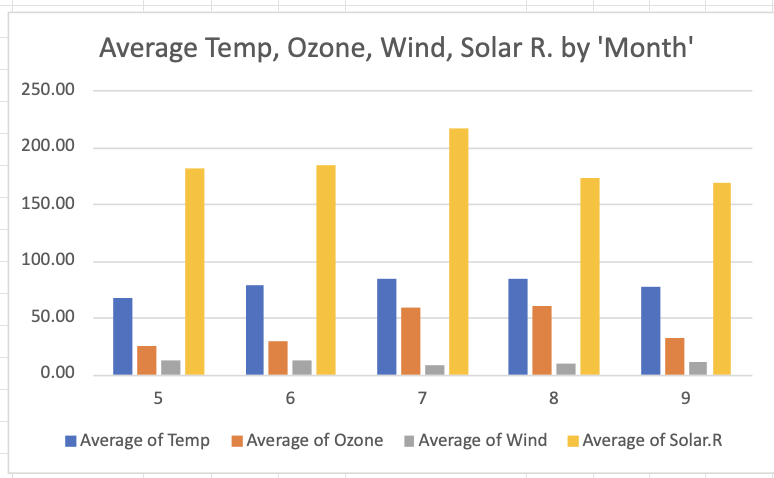
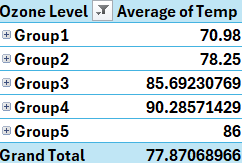
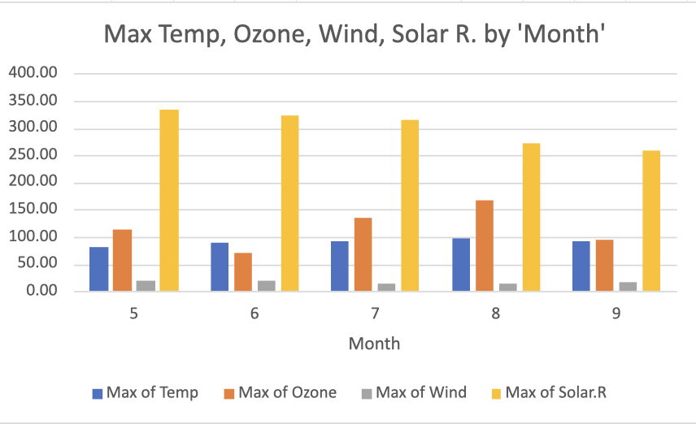
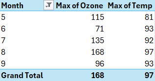
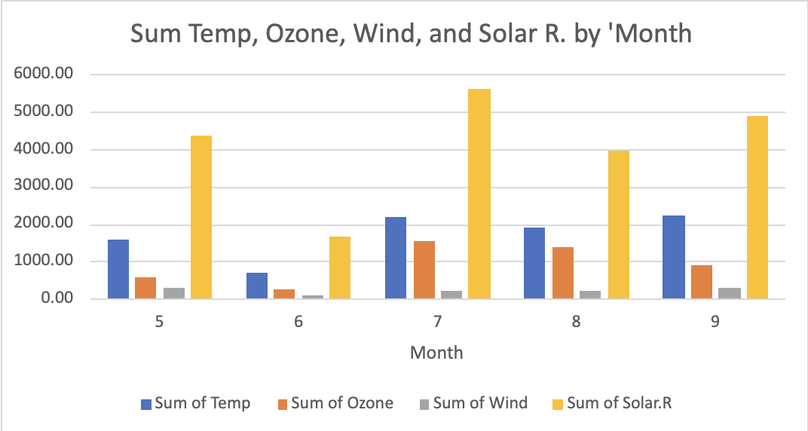
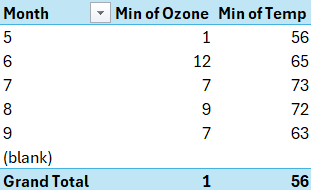
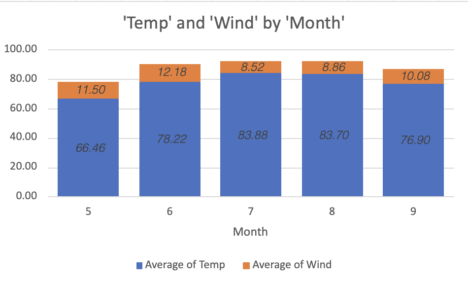

3 Saul
Welcome to Saul’s Page.
WEEK ONE
Wednesday
3.1 Topics Reviewed
In week 2 we kept using the data set of air quality and started learning about pivot tables. We also reviewed on how to properly use different kinds of graphics and charts in excel.
Data Description
Daily air quality measurements in New York, May to September 1973.
Format
A data frame with 153 observations on 6 variables.
[,1] |
Ozone |
numeric | Ozone (ppb) |
[,2] |
Solar.R |
numeric | Solar R (lang) |
[,3] |
Wind |
numeric | Wind (mph) |
[,4] |
Temp |
numeric | Temperature (degrees F) |
[,5] |
Month |
numeric | Month (1–12) |
[,6] |
Day |
numeric | Day of month (1–31) |
3.1.1 Details
Daily readings of the following air quality values for May 1, 1973 (a Tuesday) to September 30, 1973.
Ozone: Mean ozone in parts per billion from 1300 to 1500 hours at Roosevelt Island
Solar.R: Solar radiation in Langleys in the frequency band 4000–7700 Angstroms from 0800 to 1200 hours at Central Park
Wind: Average wind speed in miles per hour at 0700 and 1000 hours at LaGuardia Airport
Temp: Maximum daily temperature in degrees Fahrenheit at LaGuardia Airport.
Source
- The data were obtained from the New York State Department of Conservation (ozone data) and the National Weather Service (meteorological data).
References
- Chambers, J. M., Cleveland, W. S., Kleiner, B. and Tukey, P. A. (1983) Graphical Methods for Data Analysis. Belmont, CA: Wadsworth.
3.2 Ozone Histogram
We created a Histogram and we use the section of Ozone of this data set to see how the ozone was distribute.

3.3 Scatter Plot Ozone vs Temperature
For the following Scatter Plot, we wanted to see the correlation that Ozone and temperature had together. We took the section of ozone and temperature of this data set and created the scatter plot.

3.4 Average Temp, Ozone, Wind, Solar R. by Month


Average of Temp:
Starts at 66.46°F in May and increases to a peak of 83.88°F in July.
By September, the temperature drops to 76.90°F.
Trend: A clear increase in temperature through the summer months (June, July, and August), followed by a decline in September.
Average of Ozone:
Starts low at 24.13 units in May, rises sharply to 59.12 and 60.00 units in July and August, respectively.
Drops back down to 31.45 units in September.
Trend: A dramatic spike in ozone levels in the peak summer months.
Average of Wind:
Wind speed starts at 11.50 mph in May, increases slightly in June (12.18 mph), then gradually decreases through the summer to 8.52 mph in July and 10.08 mph in September.
Trend: A slight increase in early summer, followed by a steady decline.
Average of Solar Radiation:
Starts at 182.04 units in May, increases to 216.42 units in July, and decreases again in August (173.09 units) and September (168.21 units).
Trend: Solar radiation peaks in July, reflecting longer, sunnier days in mid-summer, with a noticeable decline as the summer ends.
3.4.1 Max temp, Ozone, Wind, Solar R. by Month


Using the same variables as before, with repeat a similar process but with the difference that now we were looking for the max of temperature ozone, wind, and solar radiation of these months. Starting with the variable solar radiation, the graphs show that the month with the highest level of this variable was month 5, being at 334. For the rest of the months we see how it declines, with month 6 of 323, month 7 of 314, month 8 of 273, and month 9 259.
Next is the variable temperature. Even though in the last chart the month with the highest averagre temperature was month 7, month 8 had the highest temperature in the month. And the month with the lowest temperature was month 5.
Up next is the variable of wind. And when we take a look to the information of the charts, it shows an interesting correlation between the other variables. If we see the month with the lowest wind rate is 7, being 14.90. In the char above, the month with the highest average temperature is also month 7, which this tells us that less wind could mean a higher temperature.
The last variable in the chart is the ozone. For this variable it is interesting that over these months the ozone variables were completely different from each other.
3.4.2 Sum temp, Ozone, Wind, Solar R. by Month


This table presents the monthly totals for four environmental variables: temperature (Temp), ozone (Ozone), wind (Wind), and solar radiation (Solar.R), across a 5-month period (May to September). Here’s an analysis of the data:
3.4.3 Temperature (Temp)
Highest Temp: July recorded the highest temperature with 2181. This suggests that July had the warmest weather in this period.
Lowest Temp: June had the lowest temperature at 704. This could indicate cooler conditions in early summer.
Trend: There is a noticeable increase from June to July, followed by relatively high values in August and September, suggesting a warmer late summer/early fall season.
Total: The sum across all months is 8635, showing that the overall temperature peaks in mid-summer and declines toward the fall.
3.4.4 Ozone
Highest Ozone: July again stands out, with the highest ozone level at 1537. This could be related to high summer temperatures that tend to drive ozone formation.
Lowest Ozone: June has the lowest total ozone at 265, possibly due to cooler weather or less pollution.
Trend: Ozone increases significantly from May to July, then decreases in August and September, showing that the peak of ozone corresponds to the peak summer month.
Total: The overall ozone total is 4673.
3.4.5 Wind
Highest Wind: The highest total wind value is recorded in September at 292.2, likely indicating stronger winds as the season transitions to autumn.
Lowest Wind: June has the lowest wind total at 109.6, possibly reflecting more stable atmospheric conditions.
Trend: Wind totals fluctuate across the months, with no consistent pattern, except for a noticeable rise in September.
Total: The sum for wind across all months is 1103.3.
3.4.6 Solar Radiation
Highest Solar Radiation: July again shows the highest solar radiation total at 5627, reflecting the peak summer sunshine.
Lowest Solar Radiation: June has the lowest total solar radiation at 1658, which may be due to fewer daylight hours or cloudier weather.
Trend: There’s a steady rise from June to July, followed by a decline in August and September, mirroring the seasonal solar cycle.
Total: The overall solar radiation for the period is 20,513, with most of it occurring in the mid-summer months.
3.4.7 Min temp, Ozone, Wind, Solar R. by Month


Temperature: The lowest temperature in May is 57°F, increasing gradually through the summer months, peaking at 73°F in July, and slightly dropping to 63°F in September.
Trend: Temperatures rise in early summer (June, July) and decline by September.
Ozone: The lowest ozone concentration varies, starting very low in May (1 unit), peaking at 12 units in June, and stabilizing around 7-9 units during the rest of the months.
Trend: A sharp increase in June, followed by relatively stable levels.
Wind: Wind speed declines progressively from May (5.7 mph) to September (2.8 mph).
Trend: Wind speed shows a steady decline over the summer.
Solar Radiation: It is at its lowest in May (8 units) and fluctuates across the months, reaching a peak in June (37 units) and settling around mid-range values (7-24 units) in other months.
Trend: A significant spike in June, with more stable values before and after.
3.5 Month Average of Temperature and Wind


Average Temperature:
In May, the average temperature is 66.46°F.
June sees a significant increase to 78.22°F.
July has the highest average temperature at 83.88°F, closely followed by August at 83.70°F.
The temperature starts to drop in September to 76.90°F.
Trend: The average temperature increases steadily from May through July, peaks during July and August, and then starts declining in September.
Average Wind Speed:
Wind speed starts relatively high in May at 11.50 mph and increases slightly in June to 12.18 mph.
However, wind speed drops significantly in July to 8.52 mph and remains relatively low in August at 8.86 mph.
It picks up again in September to 10.08 mph.
Trend: The wind speed starts high in early summer, drops to its lowest in July and August, and rises again in September.
Relationship Between Temperature and Wind Speed:
As temperature increases, the wind speed tends to decrease. This inverse relationship is most noticeable in the summer months (July and August), where the highest temperatures coincide with the lowest wind speeds.
The drop in wind speed during the hottest months (July and August) suggests that calm, warm weather prevails during the peak of summer.
Friday
PLACE TEXT HERE
Saturday
PLACE TEXT HERE
WEEK TWO
Wednesday
Date : Wednesday 09/04 And Friday 09/06
3.6 Topics Reviewed
In week 2 we kept using the data set of air quality and started learning about pivot tables. We also reviewed on how to properly use different kinds of graphics and charts in excel.
Data Description
Daily air quality measurements in New York, May to September 1973.
Format
A data frame with 153 observations on 6 variables.
[,1] |
Ozone |
numeric | Ozone (ppb) |
[,2] |
Solar.R |
numeric | Solar R (lang) |
[,3] |
Wind |
numeric | Wind (mph) |
[,4] |
Temp |
numeric | Temperature (degrees F) |
[,5] |
Month |
numeric | Month (1–12) |
[,6] |
Day |
numeric | Day of month (1–31) |
3.6.1 Details
Daily readings of the following air quality values for May 1, 1973 (a Tuesday) to September 30, 1973.
Ozone: Mean ozone in parts per billion from 1300 to 1500 hours at Roosevelt Island
Solar.R: Solar radiation in Langleys in the frequency band 4000–7700 Angstroms from 0800 to 1200 hours at Central Park
Wind: Average wind speed in miles per hour at 0700 and 1000 hours at LaGuardia Airport
Temp: Maximum daily temperature in degrees Fahrenheit at LaGuardia Airport.
Source
- The data were obtained from the New York State Department of Conservation (ozone data) and the National Weather Service (meteorological data).
References
- Chambers, J. M., Cleveland, W. S., Kleiner, B. and Tukey, P. A. (1983) Graphical Methods for Data Analysis. Belmont, CA: Wadsworth.
3.7 Ozone Histogram
We created a Histogram and we use the section of Ozone of this data set to see how the ozone was distribute.
3.8 Scatter Plot Ozone vs Temperature
For the following Scatter Plot, we wanted to see the correlation that Ozone and temperature had together. We took the section of ozone and temperature of this data set and created the scatter plot.
3.9 Average Temp, Ozone, Wind, Solar R. by Month
Average of Temp:
Starts at 66.46°F in May and increases to a peak of 83.88°F in July.
By September, the temperature drops to 76.90°F.
Trend: A clear increase in temperature through the summer months (June, July, and August), followed by a decline in September.
Average of Ozone:
Starts low at 24.13 units in May, rises sharply to 59.12 and 60.00 units in July and August, respectively.
Drops back down to 31.45 units in September.
Trend: A dramatic spike in ozone levels in the peak summer months.
Average of Wind:
Wind speed starts at 11.50 mph in May, increases slightly in June (12.18 mph), then gradually decreases through the summer to 8.52 mph in July and 10.08 mph in September.
Trend: A slight increase in early summer, followed by a steady decline.
Average of Solar Radiation:
Starts at 182.04 units in May, increases to 216.42 units in July, and decreases again in August (173.09 units) and September (168.21 units).
Trend: Solar radiation peaks in July, reflecting longer, sunnier days in mid-summer, with a noticeable decline as the summer ends.
3.10 Max temp, Ozone, Wind, Solar R. by Month
Using the same variables as before, with repeat a similar process but with the difference that now we were looking for the max of temperature ozone, wind, and solar radiation of these months. Starting with the variable solar radiation, the graphs show that the month with the highest level of this variable was month 5, being at 334. For the rest of the months we see how it declines, with month 6 of 323, month 7 of 314, month 8 of 273, and month 9 259.
Next is the variable temperature. Even though in the last chart the month with the highest averagre temperature was month 7, month 8 had the highest temperature in the month. And the month with the lowest temperature was month 5.
Up next is the variable of wind. And when we take a look to the information of the charts, it shows an interesting correlation between the other variables. If we see the month with the lowest wind rate is 7, being 14.90. In the char above, the month with the highest average temperature is also month 7, which this tells us that less wind could mean a higher temperature.
The last variable in the chart is the ozone. For this variable it is interesting that over these months the ozone variables were completely different from each other.
3.11 Sum temp, Ozone, Wind, Solar R. by Month
This table presents the monthly totals for four environmental variables: temperature (Temp), ozone (Ozone), wind (Wind), and solar radiation (Solar.R), across a 5-month period (May to September). Here’s an analysis of the data:
3.11.1 Temperature (Temp)
Highest Temp: July recorded the highest temperature with 2181. This suggests that July had the warmest weather in this period.
Lowest Temp: June had the lowest temperature at 704. This could indicate cooler conditions in early summer.
Trend: There is a noticeable increase from June to July, followed by relatively high values in August and September, suggesting a warmer late summer/early fall season.
Total: The sum across all months is 8635, showing that the overall temperature peaks in mid-summer and declines toward the fall.
3.11.2 Ozone
Highest Ozone: July again stands out, with the highest ozone level at 1537. This could be related to high summer temperatures that tend to drive ozone formation.
Lowest Ozone: June has the lowest total ozone at 265, possibly due to cooler weather or less pollution.
Trend: Ozone increases significantly from May to July, then decreases in August and September, showing that the peak of ozone corresponds to the peak summer month.
Total: The overall ozone total is 4673.
3.11.3 Wind
Highest Wind: The highest total wind value is recorded in September at 292.2, likely indicating stronger winds as the season transitions to autumn.
Lowest Wind: June has the lowest wind total at 109.6, possibly reflecting more stable atmospheric conditions.
Trend: Wind totals fluctuate across the months, with no consistent pattern, except for a noticeable rise in September.
Total: The sum for wind across all months is 1103.3.
3.11.4 Solar Radiation
Highest Solar Radiation: July again shows the highest solar radiation total at 5627, reflecting the peak summer sunshine.
Lowest Solar Radiation: June has the lowest total solar radiation at 1658, which may be due to fewer daylight hours or cloudier weather.
Trend: There’s a steady rise from June to July, followed by a decline in August and September, mirroring the seasonal solar cycle.
Total: The overall solar radiation for the period is 20,513, with most of it occurring in the mid-summer months.
3.12 Min temp, Ozone, Wind, Solar R. by Month
Temperature: The lowest temperature in May is 57°F, increasing gradually through the summer months, peaking at 73°F in July, and slightly dropping to 63°F in September.
Trend: Temperatures rise in early summer (June, July) and decline by September.
Ozone: The lowest ozone concentration varies, starting very low in May (1 unit), peaking at 12 units in June, and stabilizing around 7-9 units during the rest of the months.
Trend: A sharp increase in June, followed by relatively stable levels.
Wind: Wind speed declines progressively from May (5.7 mph) to September (2.8 mph).
Trend: Wind speed shows a steady decline over the summer.
Solar Radiation: It is at its lowest in May (8 units) and fluctuates across the months, reaching a peak in June (37 units) and settling around mid-range values (7-24 units) in other months.
Trend: A significant spike in June, with more stable values before and after.
3.13 Month Average of Temperature and Wind
Average Temperature:
In May, the average temperature is 66.46°F.
June sees a significant increase to 78.22°F.
July has the highest average temperature at 83.88°F, closely followed by August at 83.70°F.
The temperature starts to drop in September to 76.90°F.
Trend: The average temperature increases steadily from May through July, peaks during July and August, and then starts declining in September.
Average Wind Speed:
Wind speed starts relatively high in May at 11.50 mph and increases slightly in June to 12.18 mph.
However, wind speed drops significantly in July to 8.52 mph and remains relatively low in August at 8.86 mph.
It picks up again in September to 10.08 mph.
Trend: The wind speed starts high in early summer, drops to its lowest in July and August, and rises again in September.
Relationship Between Temperature and Wind Speed:
As temperature increases, the wind speed tends to decrease. This inverse relationship is most noticeable in the summer months (July and August), where the highest temperatures coincide with the lowest wind speeds.
The drop in wind speed during the hottest months (July and August) suggests that calm, warm weather prevails during the peak of summer.
WEEK THREE
Wednesday
4 Wednesday
4.1 Tableau Tutorial 2
Last class we chose our own data set to start and exploring Tableau. The data set that I chose is called tree_datasets. This data has 3 variables, height, volume and girth, representing the measurements of 31 trees. With this data, I will be trying to replicate and apply what the professor taught in class on how to use Tableau. Below it there will be the link to access all the visualizations made in tableau for this data set. Here is the link that will take you to the visualizations.
Friday
4.2 Friday Week 3
In Friday’s class, I worked on applying what I learned from Wednesday’s practice with the TreeData set in Tableau. I used the same ideas and methods but with my midterm data this time. I focused on creating charts and graphs to better understand my data. It was a good way to get more comfortable with Tableau and practice using it for real data, which made everything click a bit more.
WEEK FOUR